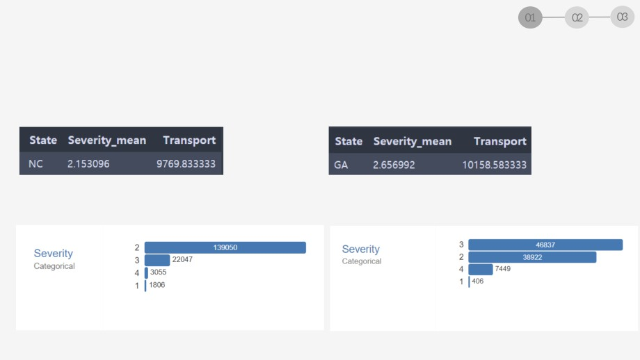
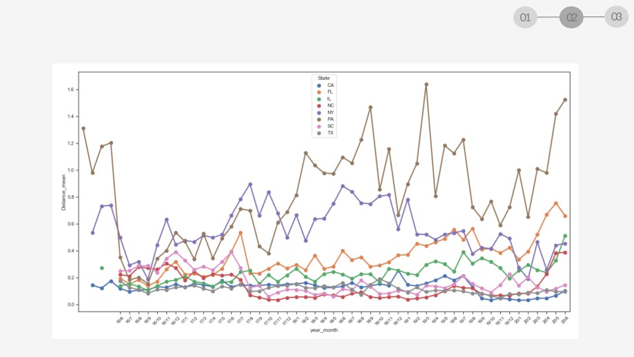

EDA on US Accidents
Group E: 김승희, 이재훈, 이준엽, 이청파, 홍석현
프로젝트 배경 소개
01
Dataset 소개 및 설명, 기초 그래프 탐색, 탐구 주제 설정
교통량별 사고 분석
교통량 데이터 설명, 기본 그래프, 주별 분석,
02
시계열 분석, 결론 및 한계점
2차 이상 연쇄사고 분석
연쇄사고 Feature 생성, 연쇄사고분포 및 네트워크,
03
연쇄사고에 영향을 주는 요소, 결론 및 한계점
US Accidents Dataset 소개
● 미국 49개 주의 자동차 사고 데이터
●
2016년 2월 ~ 2020년 6월 (52개월)
● About 3.5 million accidents (약 3500만건의 사고)
● Column 수: 49개, 17 Strings, 13 Bool, 12 Decimal, 7 Others
US Accidents Dataset 설명
Severity
Type
Numeric
49개 중 16개 Column 사용
각 사고의
Description
Traffic에 미치
는 심각성 1~4
Start_Time
End_Time
Start_Lat
Start_Lng
Distance
State
Type
Time
Time
Numeric
Numeric
Numeric
String
사고의 영향이
사고로 인해 영
Local 기준 각
Description
dismiss되는
사고 발생 위도
사고 발생 경도
향 받은 도로의
사고난 주
사고 발생 시간
시간
거리
Temperat
Wind_Chi
Humidity
Pressure(
Visibility(
Wind_Dir
Wind_Sp
Percipitat
Weather_
ure(F)
ll(F)
(%)
in)
mi)
ection
eed(mph)
ion
condition
Type
Numeric
Numeric
Numeric
Numeric
Numeric
String
Numeric
Numeric
String
Descript
지역 온도
냉각효과
습도
대기압
가시거리
풍향
풍속
강수량
날씨 설명
ion
기초 그래프 탐색
1. 교통사고의 심각도와 상관관계가 높은 변수는?
2. 교통사고 수 시계열 분석
Severity - Weather Condition
날씨가 맑은 날과 안 좋은 날 ( 안개, 비, 눈 등) 의 심각도의 차이는 크게 없었다.
Severity - Environmental Condition
탐구 주제 설정
1. 지역별/시간별 교통량 의 차이가 사고수에 영향이 있을까?
2. 유사 시간대에, 인접한 위치에서 많은 수의 사고가 발생한 것을 연쇄적인 사고 라고 판단할 수 있을까?
교통량의 필요성
사고건수, 사고로 인해 영향을 받은 거리, 사고영향시간, 심각도를 시각화 하고자 함
사고건수는 교통량에 영향을 받을 것이라고 판단함
주별 교통량 데이터를 가져와 시각화에 사용
실제로 교통량과 사고건수에는 상관관계가 보임
교통량 데이터
• 출처: US Department of Transportation Federal
Highway Administration
• 링크:
ravel_monitoring/tvt.cfm
• 날짜: 2002년~2020년 5월까지 월별 데이터
• 설명: 미국 5,000개의 교통량 측정 지점에서 수집된
주별/월별 주행거리
• 단위: Vehicle-Miles (Millions) -> 마일 (백만)
1. 교통량 대비 심각도가 특히 높은 지역 탐색
2. 교통량 - 사고 시계열 분석, 지도 시각화

NC(노스캐롤라이나) - GA(조지아) 비교분석
심각도 - 교통량
165958건
93614건
NC(노스캐롤라이나) - GA(조지아) 비교분석
환경적 요인 분석
NC(노스캐롤라이나) - GA(조지아) 비교분석
지리적 요인 분석
칼럼별 분포도
• Corr이 0.80으로 높은 관련을 보임
• 교통량이 주는 영향을 배제하기 위하여 비율을 활용
사고 건수 count
ratio =
교통량 transport
시계열 plot - 발생건수
California
Texas
Florida
시계열 plot - 발생건수 (상위 8개 주)
California, Florida, Illinois, North Carolina, New York, Pennsylvania, South Carolina, Texas
시간별 plot - 발생건수 (상위 8개 주)
시계열 plot - Ratio (상위 8개 주)
•
6, 7월에 감소
•
주황색:
Washington
DC
•
초록색:
Minnesota
시계열 plot - Duration (상위 8개 주)
시계열 plot - Severity (상위 8개 주)

시계열 plot - Distance (상위 8개 주)
교통량별 사고 분석 - 결론 및 한계점
결론: 인구밀도 많을수록 사고건수 높고, 주별 제한속도가 높을수록 심각도(Severity) 크다.
한계점: 데이터의 변동폭이 심해서 시계열로 분석할 때 유의미한 결과를 분석하기 어렵다.
1. 연쇄사고 Feature 생성
2. 연쇄사고 분포 및 네트워크
3. 연쇄사고에 영향을 주는 요소
연쇄적인 사고에 대한 탐구
유사 시간대에,인접한 위치에서 많은 수의 사고가 발생한 것을 보고, ‘연쇄적인 사고’ 에 대한 의문점이 발생
직접적인 연쇄적 충돌이 없더라도, 사고로 인한 병목 발생, 등 환경 영향으로 부차적 사고가 발생할 수 있음
연쇄적 사고가 발생할 경우, 기존 사고에 비해 심각성이 약해질까 (Dilute될까)?
직접 추돌이 아니더라도, Distance(mi) 내에서 - 한 사고가 교통환경 변화 등으로 다른 사고에 어떤 영향을 줄까?
1. 연쇄사고 Feature 생성
Hypothesis: 특정 사고가 일어난 뒤 그 사고의 영향이 남아있는 범위에서,
그 사고의 영향이 남아있는시간 내에 벌어진 사고를 연쇄사고라고 볼 수 있다.
* Feature 생성 로직:
1)
특정 사고의 Start_Time, End_Time사이에 발생
2)
해당 사고의 Start_Lat, Start_Lng 기준으로, Distance(mi) 의 반경 이내에서 발생
위 두 조건을 만족할시 선행 사고가후행 사고에영향을준것으로판단함.
* 새로 생성한Feature:
1)
Secondary_Accident: 해당 사고가 영향을 줘서 발생한
연쇄사고의 수
2)
Severity_ave: 해당 사고가 발생시킨 연쇄사고의 Severity의 평균
3)
main_Accident_code: 해당 사고를 일으킨 사고 (1차 사고이면
본인)
4)
main_Accident_oder: 해당 사고가 몇차 사고인지
2. 연쇄사고 분포 및 네트워크
연쇄사고의 특성을 살펴보고싶기 때문에, 발생시킨 연쇄사고가 1개이상 있거나, 최소 본인이 1차사고가 아닌 것을 필터링해서 보았다.
(즉, 단일 사고가 아닌 사고들만)
<1차 사고>
<2차 사고>
2. 연쇄사고 분포 및 네트워크
연쇄사고의 특성을 살펴보고싶기 때문에, 발생시킨 연쇄사고가 1개이상 있거나, 최소 본인이 1차사고가 아닌 것을 필터링해서 보았다.
(즉, 단일 사고가 아닌 사고들만)
<3차 사고>
<4차 이상의 사고>
2. 연쇄사고 분포 및 네트워크
1차, 2차, 3차, 4차 이상 사고들의 경우 Severity 분포를 살펴보기로 함
<1차 사고>
<2차 사고>
2. 연쇄사고 분포 및 네트워크
1차, 2차, 3차, 4차 이상 사고들의 경우 Severity 분포를 살펴보기로 함
직관적으로 보았을 때, Severity가 낮은 사고들의 비중 (1, 2) 이 사고의 차수가 높아질수록 오히려 낮아지는 경향이 보임
<3차 사고>
<4차 이상의 사고>
2. 연쇄사고 분포 및 네트워크
• 사고들의경우 1차부터 최대 35차 사고까지 존재
• 보다 정확한 파악을 위해, 차수가 높아질 수록 Severity
(심각도) 1~4인 사고들이 차지하는 비율을 살펴보기로 함
• 한 사고가 영향을 준 사고의 수가 100건이 넘는 경우가 존재.
꼭 직접적인 영향을 주지 않았을수도 있지만, 한 사고의 영향이
미치는 범위/시간 내에서 발생한 사고가 맞으므로 제거하지
않고 모두 포함. (정말 대형사고이거나, 대량 사고를 일으키는
환경병수가 있었던 것으로 추정)
2. 연쇄사고 분포 및 네트워크
차수가 올라갈수록 전체적으로 Severity 4의 사고 비중이 높아짐을 볼 수 있지만, Spike가 있어 정확하게 파악하기는 어려움
2. 연쇄사고 분포 및 네트워크
Severity 1의 사고일 경우 모수가 가장 적음을 알 수 있음. 따로 떼어 plot할 시, 10차가 넘어가면 거의 Severity 1의 사고가 발생하지
않음을 볼 수 있음.
2. 연쇄사고 분포 및 네트워크
Spike 를 줄이기 위해 사고 차수의 구간을 나누어 비율을 계산함.
G1: 147027
1차: 147027개
G2: 137063
2차: 137063개
1차: Group1
G3: 25556
2차: Goup2
3차: 21980개
3~4차:Group3
4차: 3576개
G4: 3647
5~9차:Group4
5차: 1851개
G5: 1197
10~15차: Group5
15차 이상: Group6
G6: 81
• 유의사항: 연쇄사고수의 편차가 워낙 크며, 데이터 자체의 Severity기준 (및 비율)이 워낙 넓고 불명확해서 이렇게
구간을 나누더라도 각 차수의 구간별 밸런스가 맞지 않는다.
• 그러나, 실제 사고가 일어나는 차수의 현실적 분포를 생각하면 (ex. 1차사고의 확률 > 10차사고의 확률) 해석의 유의점이
있지만 무의미하지 않다
2. 연쇄사고 분포 및 네트워크
절대적인 모수와 별개로, Severity 내의 비율이 상위 그룹으로 갈수록 Severity 4는 상승구도를 보임을 알 수 있고, 2~3은 하락의 구도를
보임을 알 수 있다.
2. 연쇄사고 분포 및 네트워크
반면 ‘상관관계’는 거의 없음을 볼 수 있다.
2. 연쇄사고 분포 및 네트워크 - 결론
1. 사고의 심각도가 높지만 연쇄사고가 적은 경우, 또 반대로 연쇄사고지만 심각도가 낮은 사고가 충분히 많아서, '상관관계'로
설며되는 변수는 아니다. (필연적 인과관계가 아니다)
2. 그러나 연쇄사고로 갈수록 (차수가 높아질수록), 사고에서 Severity가 차지하는 비율이 달라진다. 1에 해당하는 사고들이
여전히 많이 발생하지만, 그 안에서 비율이 달라진다고 볼수있다.
3. 통념과는 다르게, 사고의 차수가 높아질수록 Severity가 더 높은 사고가 차지하는 비율이 높고, severity 1이 차지하는
비율은 감소함은 알수있다.
결론적으로, Severity가 높다고
연쇄사고가 많이 일어난다고 볼 수는 없다 (Vice Versa)
그러나, 연쇄적인 사고일수록
Severity 가 높은 사고의 비중이 증가한다고 볼 수 있다
3. 연쇄사고 분포 및 네트워크 - 한계점
1. 연쇄사고의 차수에 따른 분포의 편차가 매우 심하다. (1차~3차에 지나치게 많이 몰려있다). 이는 현실적으로 타당한
결과이지만, 연쇄사고의 Severity의 영향에 대한 결론에 근거를 약하게 하는 요소이다.
2. 데이터 자체에서 Severity의 기준이 너무 광범위하며, 기준이 모호하다.
3. 데이터 내에서 사고가 영향을 준 Distance와 시간을 주었기 때문에 연쇄적 사고를 도출한 과정이 논리적으로는
타당하지만, 실제로 사고에 영향을 주었을 수많은 기타변수와, ‘독립사건이었을 가능성’ 이 반영되지 않았으며
데이터만으로는 유추가 불가하다
3. 연쇄사고에 영향을 주는 요소
<1차 사고>
<2차 이상의 사고>
• 색깔: 심각도
• 원 크기: base사고가 일으킨 사고 숫자(왼쪽), 몇 차의 사고인가(오른쪽)
• 결론: 일부지역에 2차사고가 많이 일어난다.
3. 연쇄사고에 영향을 주는 요소
<각 주별 사고 비율(전체 데이터 vs 심각한 사고데이터)>
• 전체 사고 대비 2차사고가 많이 일어나는 지역 선정(비율이 2배 이상)
• 어느정도 데이터 개수가 있는 지역 선정
•
[“IA”, “MI”, “NJ”]
3. 연쇄사고에 영향을 주는 요소
<기온>
<윈드칠>
3. 연쇄사고에 영향을 주는 요소
<강수량>
<날씨 조건>
결론: 눈, 비, 낮은 기온 요소가 사고에 영향을 많이 줌을 알 수 있다.
3. 연쇄사고에 영향을 주는 요소
<횡단보도의 유무별 사고비율>
<Traffic signal의 유무별 사고 비율>
이외에도, 횡단보도, traffic signal 여부가 사고에 큰 영향을 준다.
3. 연쇄사고에 영향을 주는 요소
<요일별 사고 비율>
<시간별 사고 비율>
• 다른 때 보다 교통량이 많은 주말에 severe한 사고양이 늘었다.
• 시간대는 크게 영향을 주지 않음을 알 수 있다.
3. 연쇄사고에 영향을 주는 요소 - 결론 및 한계점
결론: 심각한 연쇄사고에 가장 영향을 많이 주는 요소는 낮은 기온과 눈, 비와 같은 환경적 요소이다.
한계점: 주어진 데이터에 있는 것 외에 state별 특징 데이터와 같은 다른 데이터를 살펴보지 못해서
심각한 사고가 많이 일어나는 다른 의미있는 요인을 발견하지 못했다.
THANKS!
CREDITS: This presentation template was created by Slidesgo ,